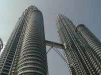 | 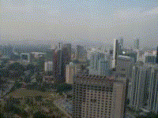 | 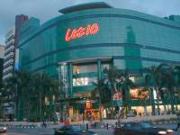 | 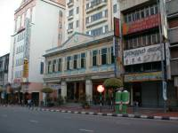 |
| Golden Triangle 01 | Golden Triangle 02 | Bukit Bintang 01 | Bukit Bintang 02 |
KLCC, KL City Centre, has modarn and high buildings is the city center and the center of business. Especially Petronas Twin Tower is the simbole of Kuala Lumpur so I relieve when I saw the tower coming up to KL from outside. this eria is called Golden Traiangle. Bukit Bintang is the most prosupered shopping town which has a lot of famous shops, famous Arrow Street of street stall restaurants and luxurious hotels.
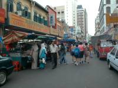 | 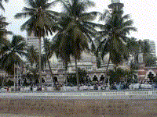 | 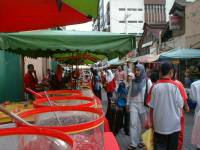 | 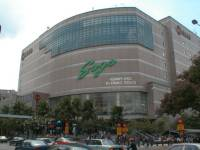 |
| Chinatown 01 | Chinatown 02 | Old Town 01 | Old Town 02 |
Cnina town in Malasysia is also stereotype as same as other sauth Aisa. Indian are distinguished in Old Town. Malaysia has 10% of India in its population, so there are Hindu temples, india restaurants and a lot of india shops.
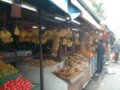 | 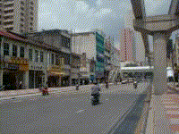 | 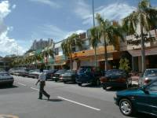 | 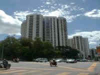 |
| Chowkit 01 | Chowkit 02 | Bangsar 01 | Bangsar 02 |
Chowkit was a old town and many Malaysian and Indian lived. Bangsah was the most modarn twon but recently many new modarn town had been made, for example Damansara, .
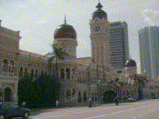 | 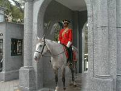 | 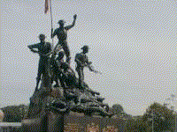 | 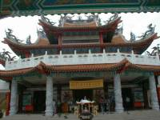 |
| around Merdeka Square | Istana Negara | Natinal Monument & parade | Chinese temple |
Malaysia is malti races country and had colonial time for a long time. So there are various culture , moreover some buildings were England style.
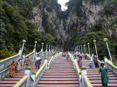 | 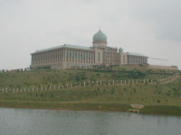 | 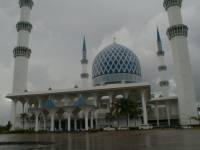 | 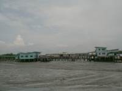 |
| Batu Caves | Putra Jaya | Blue Mosque in Shah Alam | Pulau Ketam |
Also Malaysia had specific place around Kuara Lumpur. Batu Caves is famous for Indian festival and Putra Jaya is new modarn town for gorvernment. Blue Mosqu is beautiful fiegue. Pulau Ketan is famous as crab island which float on sea. Bisides those, many place might facinate you, for example firefly park, jungles and so on.
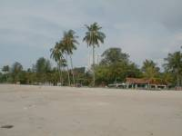 | 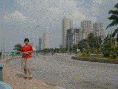 | 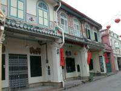 | 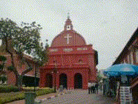 |
| Penang 01 | Penang 02 | Malacca 01 | Malacca 02 |
Penang and Mlacca are well-known town for foregner which have rich history.
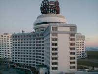 | 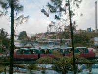 | 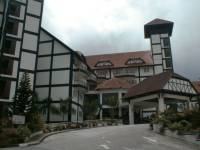 | 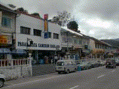 |
| Genting Highlands 01 | Genting Highlands 02 | Cameron Highlands 01 | Cameron Highlands 02 |
Malaysia wether is hot on whole year but there are some cool place as resorts. It is represented by Genting Highlands and Cameron Highlands.
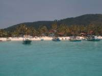 | 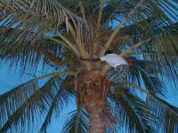 | 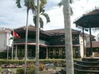 | 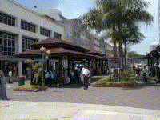 |
| Redang Island 01 | Redang Island 02 | Kota Bharu 01 | Kota Bharu 02 |
The east coast had beautiful shore and sea. Towns in the east coast were the most conservative placeand kept traditinal costom, for instance most Muslim women wore scarfs. When I visited redang Island, I was surprise by the bueatiful shore, especially sound which is made of coral so a sound is very small and dry. Bottom of sea is also sound of coral and white.
{kind=link}
{kind=link}